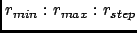
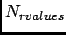
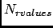
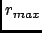
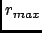

Next: Output
Up: Coordination number
Previous: Theory and implementation
Contents
Parameters
Pressing the Coordination Number button will pop up the dialog shown on figure 4.59
Figure 4.59:
The dialog from where the CN analysis will be set up and run.
|
|
The following input fields controls the parameters for the CN analysis:
- Trajectory file
Format: string
Default: traj_file where traj_file is the name of the loaded trajectory
Description: the value of this widget can not be changed. It just recalls for information purpose the name
of the trajectory file loaded for the analysis.
- Frame selection
Format: string
Default: 1:traj_length:1 where traj_length is the number of frames of the trajectory.
Description: this widget allows to select the trajectory frames that will be used for the analysis. This must
be a string of the form:
first:last:step
where first is an integer specifying the first frame number to consider, last is an integer specifying the last
frame number to consider and step is an integer specifying the step number between two frames.
For example,
- 2:10:3 will select the frames 2, 5 and 8.
- 1:5:1 will select the frames 1, 2, 3, 4 and 5.
- Distances (in nm)
Format: string
Default: 0.0:1.0:0.1.
Description: this widget allows to select distances in nm at which the CN will be computed. This must
be a string of the form:

In this way, the CN will be calculated for discrete r defined as
 where
where  is the smallest r ,
is the smallest r ,  is the
distance between two consecutive r values and with m running from 0 to 
where is the number of selected r values defined as
is the
distance between two consecutive r values and with m running from 0 to 
where is the number of selected r values defined as
 where  is the
radius of the biggest r value .
where  is the
radius of the biggest r value .
For example,
- 0:10:1 will compute PDF for r = 0, 1, 2, 3, 4, 5, 6, 7, 8, 9, 10 nm.
- 3:7:1.2 will compute PDF for r = 3, 4.2, 5.4, 6.6 nm.
- Group selection
Format: group selection string
Default: all
Description: this widget allows the selection of the groups of atoms whose centers of gravity will be used to compute
the CN (see Section 4.2.6.2). See Section 4.2.2.3 for more details about group selection.
- Subset selection
Format: subset selection string
Default: all
Description: this widget allows the selection of a subset of the system for the analysis. Only the atoms
of this subset will be considered when looking around the centers of gravity of the selected groups of atoms.
See Section 4.2.2.1 for more details about subset selection.
- Deuteration selection
Format: deuteration selection string
Default: no
Description: this widget allows the selection of a subset of hydrogen atoms that will be considered as
deuterium atoms. See Section 4.2.2.2 for more details about deuteration selection.
- CN output file
Format: string
Default: CN_traj_file.nc where traj_file.nc is the name of the input trajectory
Description: this widget allows to enter the name of the NetCDF output file of the CN analysis. A CDL
version of the NetCDF output file is also automatically created with CN_traj_file.cdl name.
Next: Output
Up: Coordination number
Previous: Theory and implementation
Contents
pellegrini eric
2009-10-06